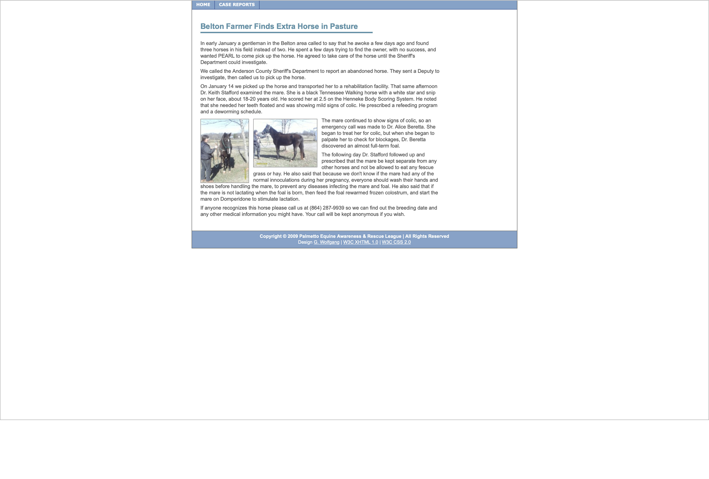
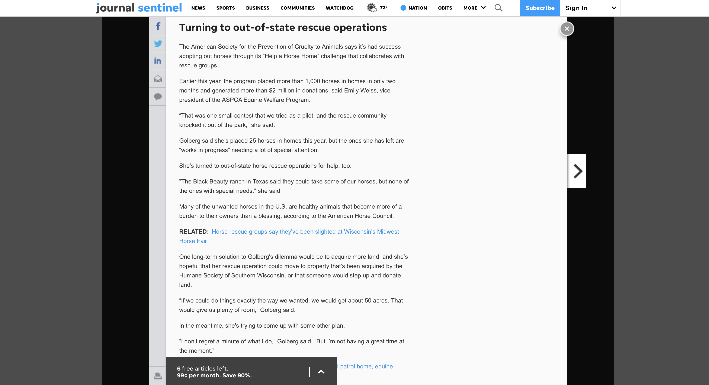
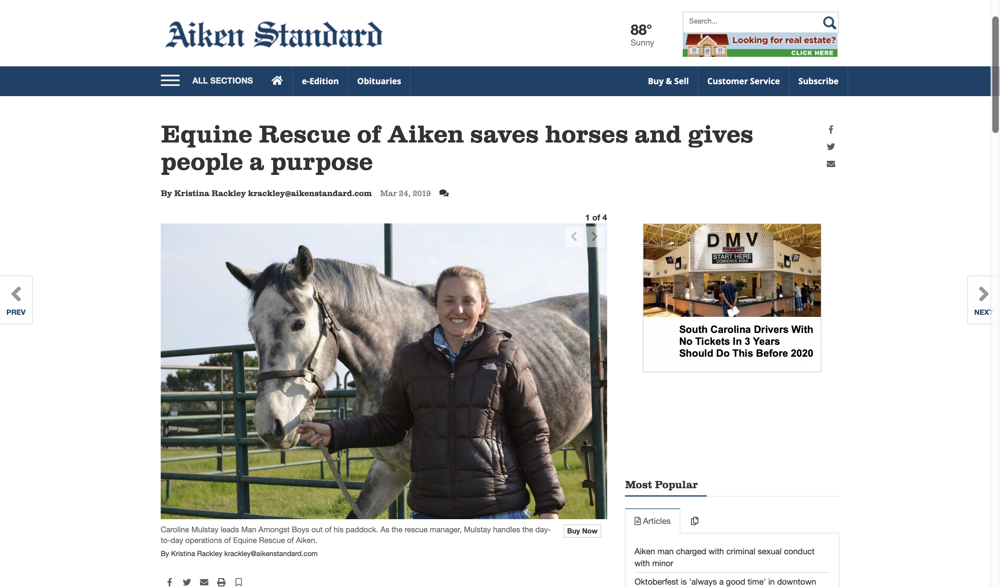
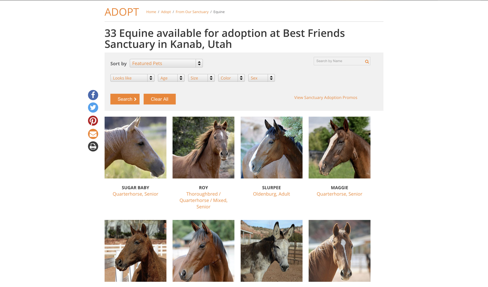

Research
Read on to discover the steps I took during the research process.
Primary Research

Research from the Palmetto Equine Awareness & Rescue League Website
Organization Goal
The purpose of the P.E.A.R.L. Organization is to aid in the welfare and preservation of equine through education and direct rehabilitation. P.E.A.R.L. offers to accomplish this by providing educational seminars, aid to law enforcement and animal control during seizures, and rehabilitative services.
Purpose
Solely funded through donations, P.E.A.R.L. "strives to eliminate abuse and neglect of equines by promoting responsible equine ownership through education and community awareness." P.E.A.R.L. works to rehabilitate abused and neglected equine to revitalize them for adoption or placement. To promote the health of equine, the organization also offers periodical gelding clinics.Secondary Research
Recent News
Next, I researched ways to combat homelessness so that I could better understand the work that the coalition facilitates.
One of the member organizations of the GCCH is Strategies to End Homelessness. Not only does this site show a successful example of a homelessness organization website but it also has great information on, well, strategies to end homelessness.
Shelter and Outreach is one step to combat homelessness. This helped me to understand that reaching out and offering shelter is the first steps to solving the problem. The homeless population cannot do it on their own so services must be made known to them so that they can seek help in the right places.
This screen shot also talks about some of the improvements and successes of their shelters. So, this is the type of organization the coalition organizes with and advocates for.
 Next, I researched ways to combat homelessness so that I could better understand the work that the coalition facilitates.
One of the member organizations of the GCCH is Strategies to End Homelessness. Not only does this site show a successful example of a homelessness organization website but it also has great information on, well, strategies to end homelessness.
Recent Innovations in Equine Rescue
 Next, I further explored the social media of the GCCH. I found that their Facebook seemed to be much more current in its use. They even feature a "Mona and Mark Show" where members of the coalition discuss social issues surrounding homelessness in Cincinnati. This video, pictured above, is one in which they discuss displacement. This was a new concept for me as well; I did not consider that the removal of benches, places to sit and rest, was a strategy to keep the homeless away from the city. It appears that there are deeper consequences to city planning and that something as simple as removing a bench can make a huge difference. Mona and Mark discuss how displacement is not the solution and can actually harm the community further.
Next, I further explored the social media of the GCCH. I found that their Facebook seemed to be much more current in its use. They even feature a "Mona and Mark Show" where members of the coalition discuss social issues surrounding homelessness in Cincinnati. This video, pictured above, is one in which they discuss displacement. This was a new concept for me as well; I did not consider that the removal of benches, places to sit and rest, was a strategy to keep the homeless away from the city. It appears that there are deeper consequences to city planning and that something as simple as removing a bench can make a huge difference. Mona and Mark discuss how displacement is not the solution and can actually harm the community further.
Also they discuss current news in their Facebook. This is one instance where they are pointing out the injustices of homeless life and create a call to action for people to advocate a solution.
This is a web article form the coalition's Streetvibes paper. This piece discusses "Hostile Design" which is similar to displacement. It is city planners and builders purposefully changing the public space to be inhospitable to the homeless or even just people looking for a place to rest in the city.
Solutions from Competitors
Equine Rescue Aiken
Accessible Home Page
One of the competitors of P.E.A.R.L., the website of Equine Rescue Aiken has a very accessible and clear home page. One of the competitors of P.E.A.R.L., the website of Equine Rescue Aiken has a very accessible and clear home page. One of the competitors of P.E.A.R.L., the website of Equine Rescue Aiken has a very accessible and clear home page.Clear Call to Action
When scrolling down the home page, the navigation bar floats with the scroll. Another useful feature is the inclusion of the call-to-action, "How Can You Help?" One of the competitors of P.E.A.R.L., the website of Equine Rescue Aiken has a very accessible and clear home page. One of the competitors of P.E.A.R.L., the website of Equine Rescue Aiken has a very accessible and clear home page.
Simple Usability
One of the competitors of P.E.A.R.L., the website of Equine Rescue Aiken has a very accessible and clear home page. One of the competitors of P.E.A.R.L., the website of Equine Rescue Aiken has a very accessible and clear home page. One of the competitors of P.E.A.R.L., the website of Equine Rescue Aiken has a very accessible and clear home page.
Adopt a Horse
Organized Box Elements
One of the competitors of P.E.A.R.L., the website of Equine Rescue Aiken has a very accessible and clear home page. One of the competitors of P.E.A.R.L., the website of Equine Rescue Aiken has a very accessible and clear home page. One of the competitors of P.E.A.R.L., the website of Equine Rescue Aiken has a very accessible and clear home page.Market Data

The Palmetto Equine Rescue League does not have a very broad marketing outreach. Along with the website, the only other marketing outlet in use is their Facebook account.